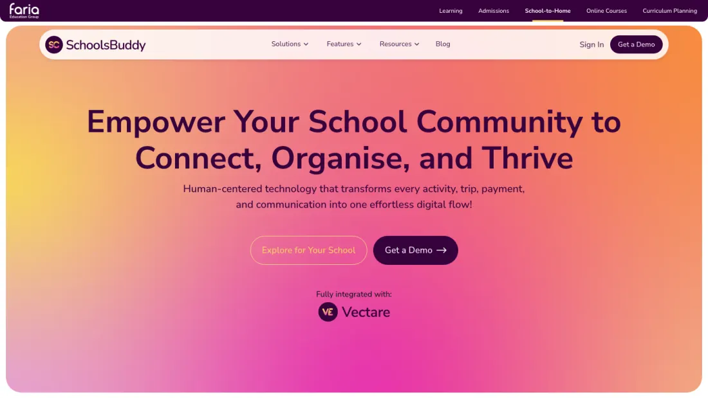
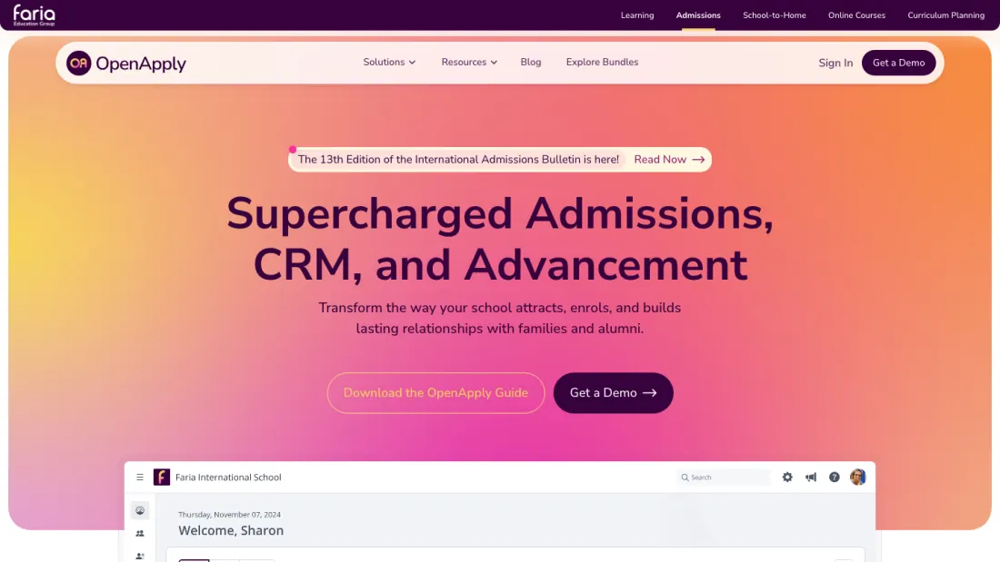

Skip to profile
AFW
✱TABLOID
Agung
Fitrah
Wibowo
Front-End Developer & UI/UX Designer

SchoolsBuddy

OpenApply
Faria Education Group
Faria Education Group
Svelte · Tailwind CSS · JavaScript
STARS Mandiri
RSUP H. Adam Malik Medan
UI Design · Layout Print · Yii2
Kimy Kuky
Kimy Kuky Cookies
UI Design · WordPress · Divi Builder
RSUP H. Adam Malik
Faria Edu
Freelancer
Web Front-End Developer / UI/UX Designer
Xtend Indonesia
Web Front-End Developer / UI/UX Designer
Universitas Potensi Utama, Medan
Email
agungf.wibowo@gmail.com
WhatsApp
↗
+62 813 7041 9424
LinkedIn
↗
agungfwibowo
‹
▾
›